Dora Kuiper / 500957716 / 16-10-2026
FUEGO
Hallo individueel die deze zin nu aan het lezen is, jij bent niet welkom binenn deze site. Dit ‘document’ bestaat aleen maar om aan eisen te voldoen en zal kort nadat het zijn functie berijkt heeft verdwijnen. Dus wie jij ook bent nu is jouw kans om te genieten van de inhoud van deze site die specifiek ontworpen is om jouw te vervelen terwijl dit nog mogenlijk is. De evenementen beschreven binnen dit document zijn mijn persoonlijke ervaring van een leuke themasemester die ik met veel plezier heb ervaren waarin ik een provocatype heb moeten ontwerpen en laten tentoonstellen met een klijn groepje van zes.
21\09\2026 - 09\10\2026
Deze sprint verliep vrijvel goed,ik had niet enorm veel te doen maar ik vermoed dat dit binnenkort zal gaan verranderen. Voor diegenen die hier nog niet bewust van zijn moet ik met een groepje van zes mensen een provocatype maken in de vorm van een smart spiegel die mensen bewuster maakt van hun mogenlijke nijging om mee te doen aan fast fashion.
Het gropeje had meerdere ideen over hoe wij dit zouden kunenn realiseren, en beslooten daardoor om ons team op te splitsen in drie duos om ieder een idee uit te laten werken. Mijn taak was om een spiegel te ontwerpen die zich thuis plaats vind.
Mijn eerste stap was zoals altijd om de tijd te nemen om na te denken over wat ik wilde dat het resultaat van mijn werk uitijndelijk zal moeten worden, en waarom. Dit heb ik gedaan met behulp van een soort van mood board/mindmap die ik in in figma heb gemaakt waarin ik alles opschreef dat mij relevant leek. Dit heb ik besproken met mijn duo partner todat wij er beiden genoeg mee eens waren.
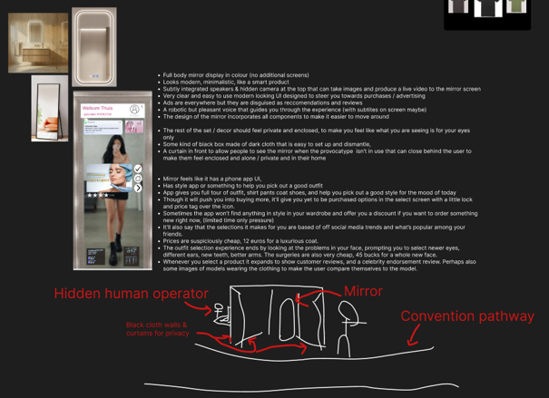
Hierna hebben ik en mijn duo partner na gedacht over hoe wij zoiets technies gezien zouden kunnen realiseren met behulp van een aantal online bronnen die ons precies stap voor stap uitlegde hoe wij dit technies gezien zouden kunnen realiseren.
Deze informatie heb ik gebruikt om een een fizieke prototype in elkaar te knutselen die beeldvorming zal geven van het uiteindelijke product.
08 OCTOBER 2026
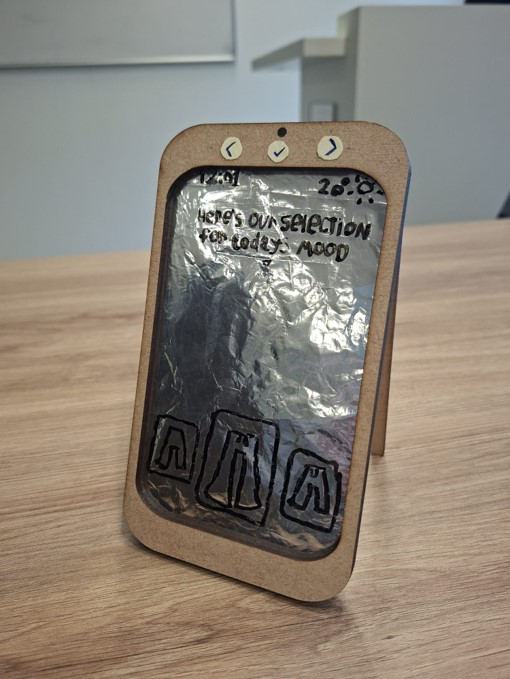
Nadat de fizieke prototype klaar was begon ik met het schrijven van de ervaring die een gebruiker van deze provocatype mee zal maken.
Ik heb mijn ideën voor de ervaring zo simpel mogenlijk gehouden zodat ik zeker wist dat het mogenlijk was om alles desnoods in mijn eentje af te ronden voor de deadline voor het geval de samnewerking niet goed verliep zodat ik mij daar geen zorgen over hoef te maken.
De hele ervaring is lineair zodat ik geen tijd gebruik om iets te maken wat mogenlijk niet gezien gaat worden en zodat de ervaaring makkelijker te navigeren is voor de gebruiker. Maar ik wil er wel voor zorgen dat er binnen deze lineaire ervaring genoeg variatie is zodat twee mensen niet altijd de zelfde ervaring zouden krijgen.
Nadat ik mijn uitgeschreven ideën aan mijn duo partner liet zien en hij geen constructieve feedback had begon ik met het ontwerpen van de beeldgevende UI voor iedere stap van de ervaaring.
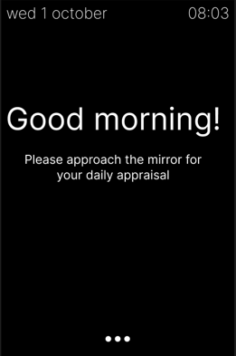
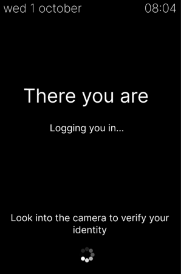
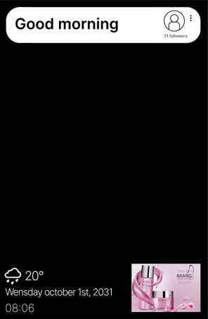
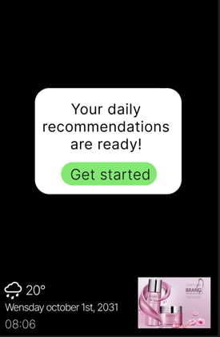
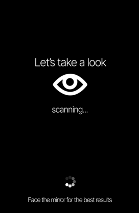
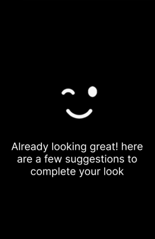
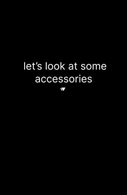
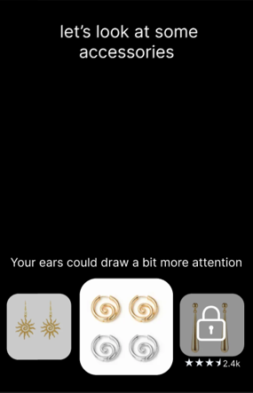
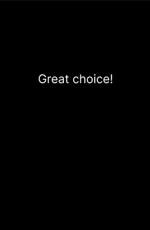
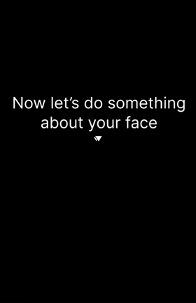
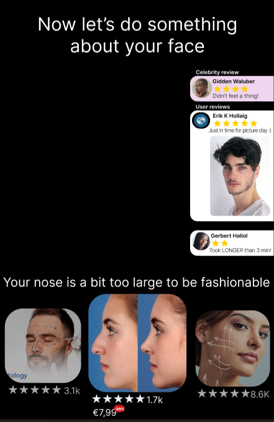
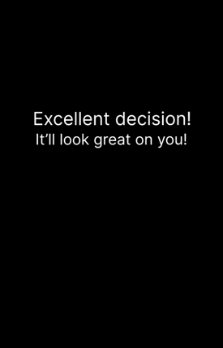
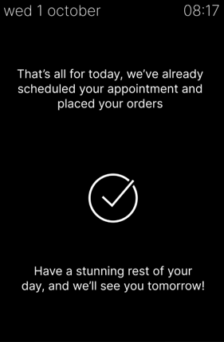
Om een spiegel met een scherm te maken hoeven wij aleen een echte scherm achter een tweezijdige spiegel te houden, alle felle kleuren zoals wit worden zichtbaar op de spiegel, en donkere kleuren zoals zwart blijven reflectief, dus stel je voor dat de zwarte onderdelen van dit ontwerp reflectief zijn en dan krijg je een goed idee van wat ik hiermee wil berijken.
(scroll naar beneden om iedere afbeelding te zien)
Mijn opdracht gever leek wel positief over deze opgeleverde resultaten en mijn team had geen constructieve feedback over mijn werkwijze waardoor ik het gevoel heb dat ik wel goed bezig ben en dit vol wil houden voor de volgende sprint.
Het enige technishe ‘probleem’ die ik deze sprint tegen kwam was dat ik niet wist hoe de lazer machine werkte toen ik het fizieke prototype aan het maken was, dit probleem loste zichzelf op toen iemand met meer ervaaring aanbod om mij hiermee te helpen.
19\10\2026 - 06\11\2026
Deze sprint verliep ook vrijwel goed. In de laatste week van de sprint moesten wij een fysiek prototype af hebben om tijdens het Society 5.0-festival tentoon te stellen. En omdat ik mij veel voor moest bereiden op het uitvoeren van een seminar, had ik het in de eerste week van de sprint te druk om hieraan te werken, waardoor ik maar een week (plus een dag) had om hieraan te zitten.
Gelukkig was ik alleen verantwoordelijk voor het ontwerpen en maken van het digitale onderdeel van de ervaring (UI & navigatie) en was die ene week genoeg om iets in elkaar te zetten dat er afgerond genoeg uit zag om als beeldvorming gebruikt te worden.
De eerste helft van deze week heb ik gebruikt om het eerste scherm te maken, css en Vue-animaties te leren om het te laten bewegen en om te leren hoe ik keyboardfunctionaliteit aan moest schaffen.
Ik heb de UI eerst op een grotere monitor gebouwd, maar donderdag na mijn seminar heb ik de kans gekregen om de echte monitor die wij achter de spiegel zouden plaatsen mee naar huis te nemen, zodat ik mijn ontwerp kon afstemmen op het daadwerkelijke formaat. Ook heb ik mijn ontwerp aangepast door alle elementen in de hoeken meer in het midden te plaatsen om het minder duidelijk te maken waar de echte randen van het scherm zijn achter de spiegel om de illusie te versterken.
29 OCTOBER 2026
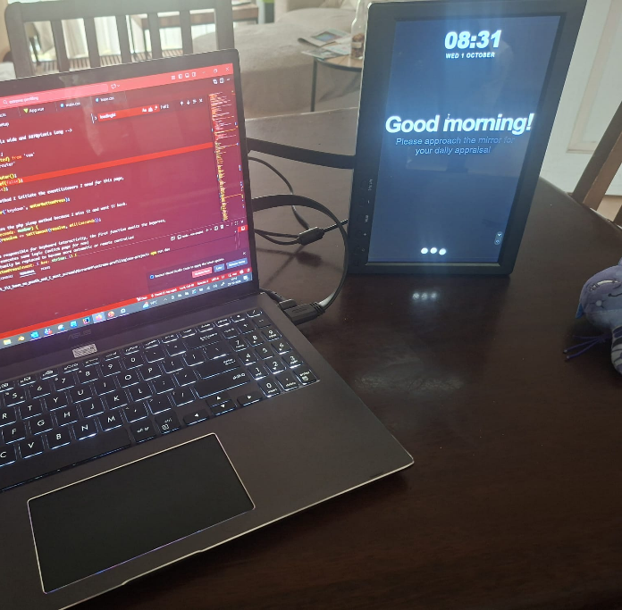
En op vrijdag ben ik weer naar campus gegaan om mijn UI uit te testen in de spiegel die mijn teamgenoten mooi in elkaar hebben gezet.
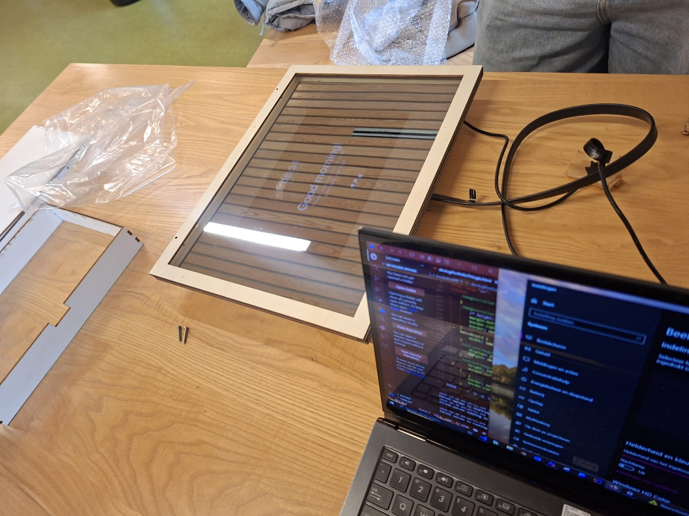
De spiegel frame was volledig van hout gemaakt en in deze afbeelding was de binnenkand nog niet verduisterd waardoor je hier nog duidelijk kan zien waar het scherm eindigd.
29 OCTOBER 2026
Op de maandag voor het evenement was het mij gelukt om de volledige demo af te ronden en alle visuele errors eruit te halen.
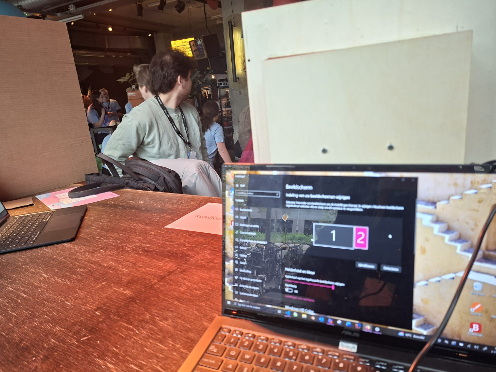
Het evenement was over het algemeen hartstikke leuk, maar voor de eerste 2 uur zat ik achter de speigel, en drukte ik op enter zodra iemand ervoor stond en naar het scherm keek ervaaring te starten.
03 NOVEMBER 2026
De algemene feedback hierop leek wel positief, en het grootste deel van de constructieve feedback betrof dingen die wij al van plan waren om toe te voegen (langere ervaring, meer interactie, betere suggesties, meer 'dark' maken). Ook merkte ik op dat veel mensen dezelfde suggestie hadden over dat zij graag de geselecteerde producten op zichzelf wilden zien in de spiegel, wat ik ook een leuk idee vind, maar niet doenbaar is binnen de tijdslimiet en met een totaalbudget van 100 euro.
Uitleg:
Als wij dit echt willen doen hebben wij 45 individuele 3D modellen nodig die klijn genoeg zijn om op een raspberry pi gerenderd te worden, meerdere cameras met specifiieke richtingen om de afstand tussen de gebruiker en spiegel op te meten, geadvanceerde trackingsoftware die een 3D rig (skelet) van een mens specifiek uit moet richten op de proporties van de gebruiker zodat de 3D modellen op de juiste positie en deformatie geplaatst kan worden op de gebruiker in de spiegel, ook moeten wij een volledig 3D mesh hebben van een vergelijkbaar persoon om de zijden van de 3D modellen te verbergen die de persoon zou bedekken met hun lichaam als zij het echt draagen. Ook moeten wij eye tracking aanschaffen en de hoogte weeten van de gebruikers ogen zodat wij de in real time gerenderde beelden op de juiste positie kunenn zetten zodat de gebruiker ook echt de kleding op de juiste positie afgebeeld ziet om het van hun perspectief eruit te zien dat zij het ‘dragen’. Ook hebben wij een groter scherm nodig die de volledige spiegel bruikbaar maakt zodat het effect niet verdwijnd zodra iemand uit de randen van de monitor beweegd. Ook zou het on mogenlijk worden om tshirts aan te raden als iemand een jas aan heeft, schoenen kunnen wij ook niet aanbieden zonder een speigel & monitor die lang genoeg is om de gebruiker hun schoenen te laten zien. En als een van deze elementen breekt of niet perfect werkt dan verdwijnd de hele illusie.
TL;DR: Niet mogenlijk met 100 euro
Bijna alles wat ik moest doen voor dit project heb ik nog nooit eerder gedaan, maar ik ben alsnog niet echt tegen ernstige technische problemen aangelopen. Alles wat ik nodig had was gewoon verkrijgbaar op het internet.